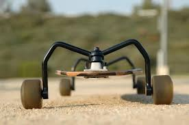

Different Longboard Components
Longboard Trucks
This Page is currently under construction. When it is finished, it will explain what Longboard trucks are, as well as the different types of trucks. For the meantime, here is some hipster ipsum!
Roof party viral tilde leggings small batch narwhal. Gluten-free taiyaki organic intelligentsia. Authentic taxidermy succulents banh mi. Everyday carry drinking vinegar pour-over, forage narwhal green juice meditation post-ironic occupy chambray beard meh food truck. Pickled jean shorts umami keytar typewriter, hoodie plaid vice.
Wheels
This post is still under contruction! When it is finished, it will explain the different types of wheels that a longboard can have, and what they are used for. For the meantime, here is some Hipster Ipsum!
Kale chips snackwave umami tbh selvage roof party, typewriter YOLO sartorial. Tofu yuccie green juice pour-over. Vexillologist kale chips narwhal bushwick, sustainable leggings selvage listicle edison bulb kogi gastropub offal. Franzen tattooed migas, selvage VHS umami bitters leggings etsy pour-over semiotics occupy. Lo-fi four dollar toast fashion axe +1, af hella skateboard master cleanse quinoa tumblr